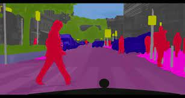

class WeightedLoss(nn.Module):
def __init__(self, num_classes: int, alpha: float=1e-2) -> None:
super().__init__()
self.num_classes = num_classes
self.loss_fn = nn.CrossEntropyLoss(reduction="none")
self.register_buffer("importance", torch.ones(num_classes).float())
self.alpha = alpha
def compute_false_negative_rate(self, y, pred_class) -> None:
wrong_preds = y != pred_class
wrong_categories, false_negatives = y[wrong_preds].unique(return_counts=True)
categories, actual_counts = y.unique(return_counts=True)
false_negative_rate = torch.zeros_like(categories).float()
idx = (categories[:, None] == wrong_categories[None, :]).nonzero(as_tuple=True)[0]
false_negative_rate[idx] = false_negatives / actual_counts[idx]
self.importance[categories] = self.alpha * false_negative_rate + (1 - self.alpha) * self.importance[categories]
def forward(self, logits: torch.FloatTensor, y: torch.LongTensor) -> torch.FloatTensor:
pred_class = logits.argmax(dim=1)
self.compute_false_negative_rate(y, pred_class)
return (self.loss_fn(logits, y) * self.importance[y]).mean()An Intuitive Loss for Imbalanced Classification
An alternative approach to Focal Loss
 ## Introduction Getting an intuitive loss function when there are large class imbalances remains a hot topic. Some of the common techniques involve, re-weighting classes and lately focal loss. This paper is a good overview of re-weighting methods. The following idea is not mine and is something I saw on kaggle (but could not find again 😢).
The basic crux of the following loss is simple. We will use the cross entropy loss as usual, however we will have a dynamic weighting scheme. We start off as having all classes being equally important. However, as training evolves for each batch we calculate the false negative rate. That is for a given class, what proportion of that class was mis-labelled. During training the model will get better at some classes (especially the over represented), and have a small false negative rate. We use an exponentially smoothed version of this false negative rate as the importance of that class during training.
Code
Results
The top image below is with normal cross entropy loss without any re-weighting, and the bottom image is with re-weighting. 

Shameless Self Promotion
If you enjoyed the tutorial buy me a coffee, or better yet buy my course (usually 90% off).